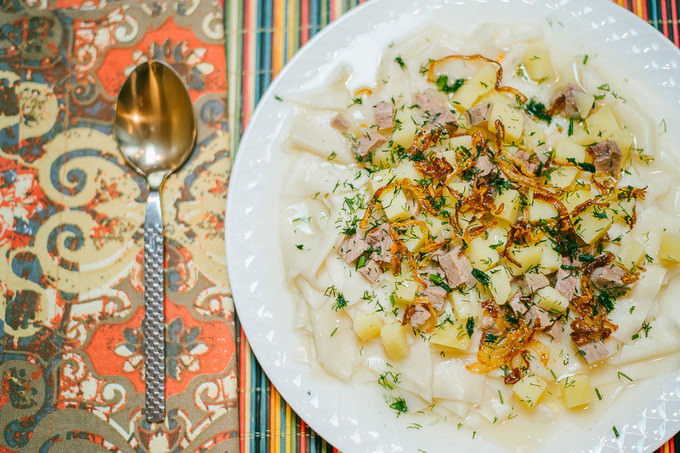

Beshbarmak Recipe

Beshbarmak means “Five Fingers” in almost all of the Turkic languages. It used to be a traditional dish for many nomadic ethnicities.
Hence, you will find Beshbarmak in almost all of the Central Asian countries. Mainly though, Beshbarmak became a national dish of Kazakhstan.
It is known under similar names in the bordering countries. Beshbarmoq, shilpildoq, norin, бешбармак, bishparmak are some of the names these
countries have for the dish. Why ‘five fingers’? That’s because the dish was eaten with bare hands and always came with a bowl of soup on a side,
called Shurpo. Honestly though, I’ve never eaten this dish with my bare hands. Same goes for Uzbek Palov :)
Ingredients
- 1-1/2 lean beef chuck (Any cut will do, really. Even the fattier ones.)
- 3L of water
- 2-1/2 TBSP salt
- 2 eggs
- 1 cup of warm water
- 2 cups of all purpose flour (have some more on standby)
- 2 medium potatoes
- 1 large onion
- 1 carrot
- 1 TBSP cumin seeds
- 1 tsp black pepper
- More water to cook the dough squares
- 1TBSP ghee (or butter), 1 TBSP avocado oil to caramelize the onions
- Dill for garnish
Steps
- In a medium-size pot place the meat, pour 3 L of water, add 1 TBSP of salt. Turn the heat on and bring the water to a slight boil
- Once the foam starts forming, use a skimmer and remove the foam. At this time turn the heat down and keep simmering the broth. You may also cover the pot with a lid halfway in order to help the meat cook faster. Or you may also use your pressure cooker, or Insta Pot to do this job for you. Simmer the broth until the meat is completely cooked and tender. This process will probably take from 40 minutes to an hour. In Insta Pot the meat and the broth will be ready in 20 minutes
- While the meat is boiling start working on the dough. Place warm water, 1/2 TBSP of salt and 2 eggs in a medium-size bowl. Give all the ingredients a stir with a fork
- Start adding the flour, 1 cup at a time. Incorporate the first cup, add the second and see if you will need more. Flour is different for everyone. Cups are different everywhere. But the dough should not be too hard and not too soft, as to stick to your hands
- Knead the dough well. Once you are done keep the dough in the bowl and cover with the lid. Let the dough rest for about 15 minutes before it is ready to be rolled out. Usually, I don’t disturb the dough until I am ready to roll it and cook it right away. Meanwhile, prep the vegetables, which will go into the gravy broth
- Potatoes are not a usual occurrence in Besbarmak. But I love potatoes in this dish. Frankly, I haven’t heard anyone complaining about it either. Cut the potatoes in small cubes
- You can cut carrots however you want. My family doesn’t like cooked carrots much. So, it goes in the broth for the taste only. I roughly chop the carrot and keep it ready until further use
- Slice the large onion and divide the end result in half. One half will go into the broth, the other half will be caramelized to be used as a garnish
- By this time I am assuming the meat will be fully cooked. Take out the cooked meat. The broth from underneath the meat is golden. Do not discard it. I place a quarter of the remaining broth in a large pot where I will be cooking the dough. The rest of the broth will remain in the original dish
- Turn the heat back on under the original pot where the meat was cooking. Add the cubed potatoes, carrots and half of the onions into the broth
- Cube the cooked meat and return it back into the pot with the vegetables
- Add cumin, black pepper and if you think the broth is low, add a little bit of water. The rule of thumb is, when the vegetables cook through, you should have a good amount of liquid to cover the dough with some broth. Check the salt of the broth. Adjust the salt and simmer this mixture
- In a small skillet place the ghee and the TBSP of liquid oil of your choice. Turn the heat to medium and add the remaining onions
- Slowly but surely cook the onions. They will become translucent first, then they will start changing color. At this time be cautious and stir the onions periodically. They might burn pretty quickly. Once the color turns light golden brown, you can turn off the heat and remove the skillet from the cooktop. If you leave the skillet on the hot cooktop, onions might keep on caramelizing further. This is what we do not want! Keep the onions aside until assembly of the dish
- Right before rolling out the dough, make sure to turn on the heat under a large pot where you are going to cook the dough pieces. Remember the broth that you’ve saved for this purpose? The entire liquid is not going to be just that broth. Add about 2 liters of water on top of that broth, add 1/2 TBSP salt and let the water come to boil while you are rolling the dough. Turn the heat down just a tad bit until the dough is ready
- Now we come to a tedious part of the recipe; rolling the dough. Remove the dough from the bowl it was in. Lightly flour the surface, flour the dough just a bit and start off with creating an even-sided pancake. The flatter and larger the pancake gets, easier it will be to start rolling the dough
- Like I mentioned above, this recipe requires the ability to roll the dough. I cannot really recommend going with any substitutions for this; unless you can find thin enough wonton wrappers or dumpling wrappers. If the wonton dough is a little thicker, you can always roll it out thinner and have the dough ready. OR you can use a dough roller machine or an attachment that comes with your Kitchenaid Mixer. Whichever works for you
- The dough should be on a thin side. We are creating somewhat translucent dough pieces to have that perfect balance Beshbarmak has. Roll the dough around the rolling pin, and slowly unroll it to a stack, in one line, by using a zigzag motion. A strict width doesn’t really matter. Anywhere between 4-6 inches should work
- Using a sharp knife slice the dough ‘log’ into 4-inch strips. Once you are done cutting all the strips, move everything to the side. Spread each dough one by one, one on top of another and create one line
- Cut the dough stack into 2-4 inch squares. I like to cut mine into 2. The dough is more manageable this way and I can spread the dough into portions much easier
- Assuming the water is readily boiling, quickly work to drop dough squares into the boiling water. You will have to singlehandedly drop every little square into the water in order to avoid dough sticking to each other while cooking. Don’t just through stacks of dough. Having more than 2 hands would work wonders during this process :) But it is nothing I haven’t done many times and you will be just fine! Cook the dough for about 4 minutes. If the water is overboiling, turn the heat down to medium
- Keep serving dishes ready to divide the dough into portions. Using a big skimmer take the dough out and spread it on the plates you are going to serve them in. These are going to be individual portions
- Spread the gravy on top of the dough, add some of the broth, garnish with caramelized onions and dill. I feel like dill goes splendidly well with this particular dish. You can also garnish it with raw onions. The cooked carrots can go on top as a garnish, too. The colors will look amazing. If you do not like cooked carrots, you may take them out